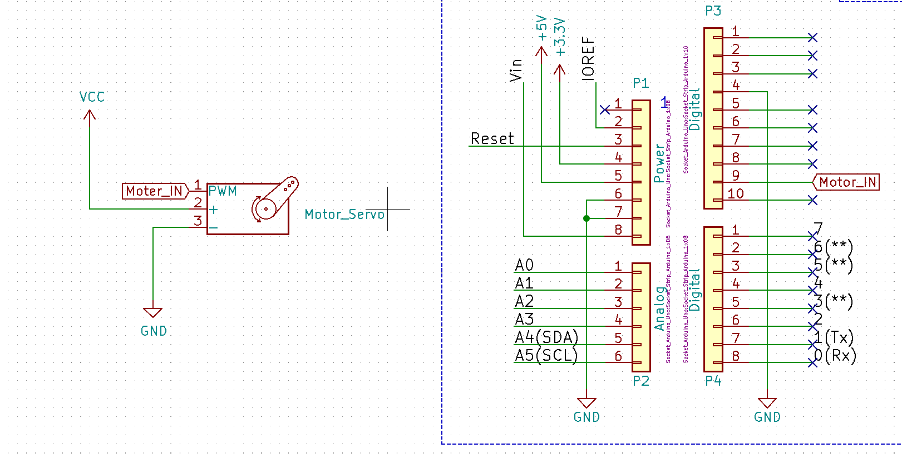
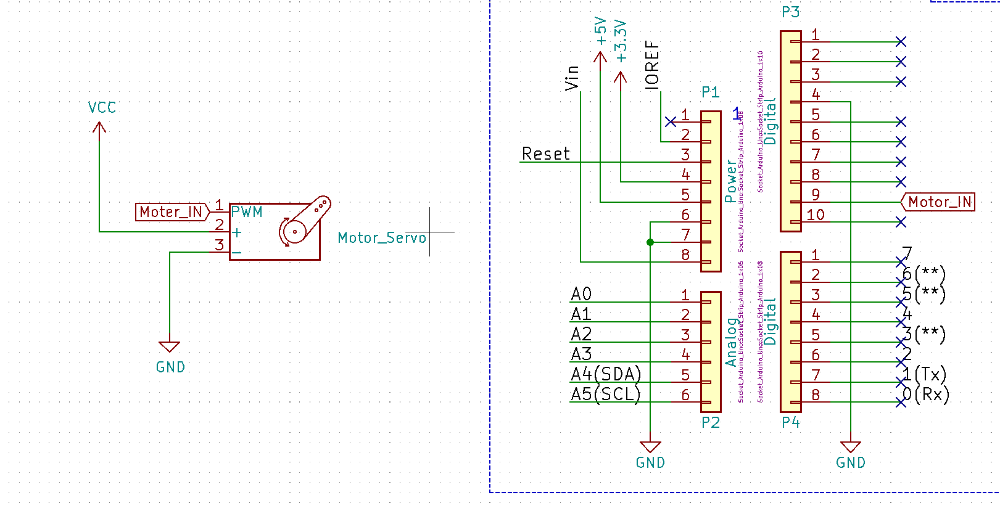

どのようなものか
今回の基礎研究ではマリオの世界観を取り入れ、お客さんに楽しんでもらうことを第一に考えて作成した。お寿司を掴むためのハンドは以下の画像に示す。
このハンドはパックンフラワーを採用しており、見た目からの印象がとても強いため、お客様に楽しんでいただけると思う。また、某寿司店のゲームシステムなども取り入れ、遊び要素満載な寿司提供システムにした。
私は回路とミニゲームの1つを担当した。
私は大阪府のどこかの池の近くに住んでいるものである。
最近の墓場まで持っていきったい謎ランキング一位は、家でgooglemapを開くとなぜか池の中にいると判定されることである。
所属は、大阪公立大学工業高等専門学校の4年メカトロニクスコース（19歳）の学生である。趣味は走ること、音楽を聴くこと、アニメを見ることである。
pythonを用いて4択クイズを作成した。これは tkinter を使用して作成されたPythonのGUIアプリケーションである。クイズの内容はドラゴンボールに出てくる頭がツルツルなキャラクターを当てるゲームとなっている。 キャラクターはクリリン、スポポビッチ、天津飯、ナッパの4人である。遊び方は、各問題に対して写真が一枚表示され、その写真が4人うち誰なのかを当てるゲームになっている。 ドラゴンボールのことを知らない人でも楽しめるよう最初に各キャラの紹介を行い、その後クイズを行う仕組みになっている。 解いていくにつれて難易度が上がっていき、最終正解した数が表示される。
CADの実習の課題で自由に基板を作成するという課題があった。そこでシルクプリントやLEDを使い、元気玉を再現した基板を作成した。 写真ではふざけているように見えるがしっかりと、LEDが点灯するように配線をしている。この課題で私はデザイン性を重視した。 改めて見直すと部品が一つ透明化している部分は謎であるため、追求しないでいただきたい。これは、ほぼ外観重視のLEDを点灯させる基盤となっている。
今回の基礎研究ではマリオの世界観を取り入れ、お客さんに楽しんでもらうことを第一に考えて作成した。お寿司を掴むためのハンドは以下の画像に示す。
このハンドはパックンフラワーを採用しており、見た目からの印象がとても強いため、お客様に楽しんでいただけると思う。また、某寿司店のゲームシステムなども取り入れ、遊び要素満載な寿司提供システムにした。
私は回路とミニゲームの1つを担当した。
ハンドを動かすために必要なサーボモータの回路と、皿の枚数をカウントするのに必要なマイクロスイッチの回路を設計した。回路図は以下の通りになっている。
サーボモータの回路ではArduino r4 wifi、サーボモータ、直流安定化電源を使用した。Arduinoに内部抵抗があるため抵抗は使用しなかった。
マイクロスイッチの回路ではRaspberry Pi 4 Model B､ マイクロスイッチ(Z-15HW78-B)を使用した。この回路は、マイクロスイッチが押されたときにHの信号を送り、Raspberry Piがその信号を受け取るという動作を行うための回路である。
 

ミニゲームとして、スロットを作成した。これはhtml、CSS、JavaScriptを用いて作成した。このゲームはジャグラーと同じ仕組みになっており、各横列または斜めで同じ絵柄を3つそろえると「あたり」という判定になっている。画像の種類は6種類あり、ランダムで回転するようにした。
あたりの判定だけではなく、リーチ判定も追加しており、各横列または斜めで同じ絵柄が2枚そろった場合に、「リーチ」と表示されるようにしている。目押しで止めれるようになっているため、運に頼らず、実力で楽しめるようになっている。
また、様々な演出を追加し、遊んでもらう人により楽しんでもらえるような要素を取り入れている。
工学的なスキルは授業で取得したものだけである。熟練度を★3段階評価で示す。
現在私が扱えるスキル
★3:kicad, Arduino言語
★2:C言語, python, 旋盤, ボール盤, Fusion360
★1:Creo, JavaScript
Python, JavaScript
C言語, Arduino言語
Fusion360, kicad, Creo
旋盤, ボール盤
1年生から3年生まで陸上部に所属していた。